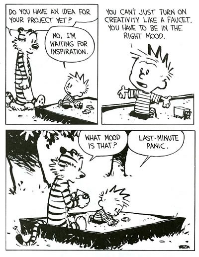

Things I Read This Week #1: KM Failures, AI-roboros, and the Worst Neologism Ever
I returned to work after a personal leave of absence last week; between that and some other personal stuff going on, I didn't have the spoons to write a post. I also basically tried too hard to have a Good Idea to write about, which put me off blogging entirely for a bit, so I just decided to not.

This doesn't work though if there's no one inducing panic and it's only me writing for me. Alas.
In retrospect, I think that part of the Good Idea failing to materialize is that I was trying to force myself to have clever, useful, marketable things to say specifically in reference to AI, ideally more specifically around generative AI. After all, it's topical, newsworthy, engaging, there's lots going on!
In practice, though, I've found myself disengaging a bit from AI, taking a step (further) back from the cutting edge. I seem to have passed through the honeymoon stage of Oberg's culture shock model, and am now on to the "negotiation" stage (the equivalent of an expat being irritatedly baffled by things like confusing lines at the post office or being unable to work out a ticket machine, or, say, getting tricked into pouring a completely unpleasant surprise on your cornflakes1).
My personal negotiation stage is still unfolding, and I'm sure I'll have more coherent thoughts about it in the not-too-distant future; in the meantime, I want to highlight a few things I read this week that helped flesh this feeling out for me a little:
Why Your AI is Only as Smart as Your Knowledge Management: The Hidden Foundation of Effective AI Implementation (CannonCo)
As the title suggests, this article claims that, while breathless headlines and frothy demos promise the world, many actual AI implementations not only fail to meet expectations, but fail to even make it into production. (Let's put a pin in that exact statement for a moment - I'll come back to that specific claim shortly, but I have no issues with that general prediction.) The article pinpoints knowledge management as a central, non-negotiable prerequisite that many organizations kinda gloss over before throwing AI at a problem. The result is, at best, delayed timelines for implementation while data is audited, organized, formatted for AI, contextualized, and properly curated and maintained; at worst (I reckon far more commonly), completely untrustworthy and irreplicable results from a black box model trained on data that no one fully understands or can articulate.
And even worse than that, it's not a given that the untrustworthy model would even be recognized as such. (I'll have much more to say on this at some point hopefully soon - I recently spent six months on a project evaluating Natural Language Processing models for named entity recognition and summarization tasks, and boy howdy did I learn a lot about how tricky it is to correctly implement and evaluate even seemingly simple tasks, and how fallible evaluation metrics can be. In short, it's very VERY easy and undoubtedly tempting to say "high accuracy number good", but the reality is that all you know is that "high accuracy number high", not that "high" = "good" for the task, nor that "accuracy number" is the right number to be looking at in the first place.)
One wonders how many of the projects currently having AI thrown at them would be sufficiently, if not better, addressed by just implementing the robust KM practices you'd need to have in place anyway to make the AI implementation a success. But KM doesn't have the same cachet as AI does at the moment, and orgs are feeling huge pressure to get in on the AI gold rush before their competitors do, even if the gains are illusory.
Which brings me to my next article:
Every Reason Why I Hate AI and You Should, Too (Marcus Hutchins, MalwareTech)
This article by cybersecurity legend Marcus Hutchins is very, very worth reading in full yourself, and I basically agree with everything he wrote here. I personally align with his third category of opinions from "reasonable" people he's talked to re: AI, with the perspective of "the tech has a narrow use case for which [it is] exceedingly valuable, but almost everything else is just hype". Hutchins was talking here about generative AI specifically, but I'd include other applications as well; referring back to a previous point, it's likely that some if not many use cases currently being addressed by "sprinkling some AI on it"2 could be addressed just as well if not better by more conventional means - better KM, judiciously applied statistics, etc.
Hutchins goes on to say a lot of really insightful stuff about the "big tech AI hedge bet" on the race to AGI, "trickle-down hypenomics", and more about how LLMs specifically will not be the answer to AGI despite receiving a huge amount of the attention (seriously, just go read the article - he lays all of this out much better than I can paraphrase). It's all fascinating, food for thought, and I'll be diving more into these topics soon I'm sure. But I found myself really resonating personally with the section titled "The Snake is Already Eating Its Own Tail".
The AI-roboros (get it?)3
Hutchins describes the issue of "source cannibalization" and why it's likely to be a death knell sooner rather than later for LLM development:
Right now big tech companies operate in a temporary utopia where they’ve been able to capitalize on mass-scale copyright infringement as a result of the free and open internet, but have not yet started to suffer the consequences of the damage they’re causing to the information ecosystem.
LLMs act as a sort of magic funnel where users only see the output, not the incalculable amounts of high-quality human-produced data which had to be input. As such, it’s likely people significantly overestimate how much their work (prompting) contributed to the output they received, and grossly underestimate how much of other peoples’ work was required to make it possible. It’s classic egocentric bias.
This kind of bias leads to people ignoring the threat LLMs pose to their own data sources. The problem is further amplified by AI slop (low-quality AI generated content), which floods the internet, degrading the average quality of information. This slop not only makes it harder for humans to find high-quality sources, but harder to train LLMs, since allowing the slop to enter LLMs datasets risks creating a feedback loop which could cause the LLM to undergo model collapse.
I don't know about you, reader, but I've already noticed the proliferation of obviously AI-generated content across the web. Hell, I've played with generating some myself (not this site/blog - this is all me, baby!). It's admittedly fun and a cool parlor trick, and it can even be useful to word-vomit into a ChatGPT window and have it re-organize your thoughts into something more coherent.
However, for all the glitter and fun, there are some seriously dark implications for the Internet, for data, for individuals, and for society. (I'm not even going to touch the environmental impact here, as that's well beyond my area of expertise, but there's obviously plenty to keep you up at night about there too.) Hutchins speaks above to some of these: the mass-scale copyright infringement and theft required to train these LLMs in the first place; the ongoing threat to the quality of data and chilling effect on new, original, content; the inevitable ebb of LLM training, or at least of training quality, as a result of the degradation across the Internet.
Hutchins doesn't speak to this directly, but I've been thinking a lot about AI-generated image quality in particular, and how that's evolved over the last couple years. Just a few years ago (maybe not even? what even is time anymore), it was easy to tell at a glance that an image had been AI-generated; there were certain tells (number of fingers or limbs, a weirdly grainy, over-saturated quality to a lot of images, etc.) and a certain uncanny-valley-ness that was easy to pinpoint if not describe. That "uncanny valley" only lasted a few years, though. Nowadays, it's getting harder and harder to tell what's been AI-generated or altered, or not. This Reddit post from two years ago shows the evolution in Midjourney from v1 to v5 and already at that point one could be forgiven for failing to notice at a glance that the v5 image was AI-generated. And that was two years ago! Two years ago is a whole era ago in terms of AI evolution.
In terms of text, we're still in the "uncanny valley" era where you can "just tell" that something has been generated by ChatGPT: the dashes, the "it's not [x], it's [y]" phrasing, emoji-fronted checklists, obnoxious calls to action at the end of every paragraph. But we'll surely move past that soon if not already (I haven't tried out GPT5 yet; maybe today's the day!) and I think that will be the true existential threat to the Internet or certain chunks of the Internet (hello Reddit). The unwritten social contract and trust underlying message boards and social media since their inception will be irrevocably broken: if I have no reason to believe that there are any humans left on the Internet (or any way to tell who is human from what is an AI agent), why would I go there to socialize?
Faux-ductivity: LLMs as Brain Candy4
Hutchins also wrote at length in his article about the threats implicit in LLM use not only on an internet-wide level, but also to the individual using it.
Per Hutchins:
By allowing people to quickly summarize & manipulate the work of others, LLMs use gives the same feeling of achievement one would get from doing the work themselves, but without any of the heavy lifting...
LLMs are somewhat like lossy compression of the entire internet. They boil nuanced topics down into a form that isn’t quite layperson level, but loses a lot of nuance while still evoking a feeling of complete understanding. The part that’s missing is, you don’t know what you don’t know. If you lack an intricate understanding of the task you’re using an LLM for, you have no idea what nuance was lost, or worse, what facts it made up...
When people use LLMs, they aren’t just being presented with flimsy surface level understandings of topics. They’re often outsourcing many of their means of reinforcing knowledge to the AI too. And in some cases, their logic and reasoning itself. The more people lean on LLMs, the more likely they are limit their knowledge expansion, undergo skill regression, and weaken their logic and reasoning ability.
Basically: LLM usage can not only make you feel like you've understood something when you haven't (even assuming that the summary it gives is factual, which we've already established is not actually a safe assumption!); LLMs can also make you feel like you've accomplished or produced something when you haven't.
I've experienced this personally. As I've written about before, LLMs make it very easy, and actually actively encourage you to, produce tons of words about a topic, without actually leaving the chat window to go work on it, or solidify what you've 'discussed'. It's basically that feeling of looking up from a book and realizing you didn't take in the last 3 paragraphs you read, except magnified.
In terms of actually producing or doing things, it's so so enticing and convincing to feel like you've accomplished a lot, but when you walk away, it's all just ephemeral words in a box. A GPT will encourage and cheerlead you all the livelong day to build out a 90-day learning plan to study for whatever exam, build a tracker for your new fitness or nutrition plan, whatever, and it'll feel good! But then when you get up from your desk, you'll still have just spent hours sitting at your desk staring at a screen by yourself and you won't actually have produced anything even though it feels like you did.
Of course, the LLM doesn't care what you've produced; after all, your engagement with the LLM is the primary measure of success for proprietary LLMs, not whether you actually go do/learn the thing or not. But for you, the person who actually sat down presumably wanting to plan to do something, this is a problem.5
"The Hypothetical AI-Accelerated Employee"
Hutchins wraps up his article by addressing "the hypothetical AI-accelerated employee":
The popular wisdom that’s seen as somewhat of a middle ground between “LLMs are useless plagiarism machines” and “LLMs are going to replace everything ever” is the hypothetical AI-accelerated employee. While not necessarily terrible advice, I feel like the mainstream interpretation is the opposite of what the advice should be.
The fact of the matter is, “prompt engineering” or whatever they’re calling it these days, has a skill cap that’s in the floor. Prompting LLMs simply just isn’t a skill, no matter what influencers who definitely weren’t previously claiming Bored Apes are the new Mona Lisa say. If you look at the prompts even the LLM developers themselves are using its things like “please don’t make stuff up” or “think extra hard before you answer”.
In fact, I’d make a strong argument that what you shouldn’t be doing is ‘learning’ to do everything with AI. What you should be doing is learning regular skills. Being a domain expert prompting an LLM badly is going to give you infinitely better results than a layperson with a ‘World’s Best Prompt Engineer’ mug.
This aligns with what I've personally heard when I've asked industry experts the exact same thing: the differentiating factor for consultants and other knowledge workers will not be being a great prompt engineer or what have you (although understanding how prompts work and what their limitations are is a great skill to have, it shouldn't be everything). I believe that the differentiating factor will be domain expertise, held by humans.
To paraphrase an executive I talked to recently, it's true that clients don't need consultants anymore for 101-level answers to generic technology or business questions, but what they do and will continue to need is help interpreting those answers in the context of their specific circumstances6. I think that that domain expertise and interpretation/extrapolation capability is only going to become rarer and more precious considering the slop proliferation and decline in actual productivity mentioned earlier. Hutchins predicts actual, literal mass cognitive decline as a result of widespread LLM use; I guess only time will tell.
The Worst Neologism Possibly of All Time
The final piece that caught my attention this week in "AI, maybe not all it's cracked up to be?" news wasn't actually an article, but rather a LinkedIn post by cybersecurity investigative reporter Brian Krebs that introduced me (unwillingly, nauseatedly) to the term slopsquatting.
It's actually a fascinating phenomenon, if thoroughly unsettling in name, implication, and scope, and I don't envy security professionals who will have to figure out how to deal with this.
I'm very much not an expert, but I'll try to explain as best as I can.
I haven't said much about the explosion of vibe-coding that's underway as we speak, but it's massive; essentially, using LLMs and other AI models to code applications, with all of the issues that we already discussed with LLMs. It's basically now really easy to generate an app that kinda maybe looks like it works on the surface, but without any understanding of what's going on under the hood. (I've dabbled with it, but quickly ran into the problem of the generated code outpacing what I understood about how it worked, and I abandoned my attempts after a few days of feeding error codes back into Cursor and getting increasingly unintelligible results.)
Anyway. An inherent problem with LLMs, and one that is a basic component of their design (so impossible to fully mitigate), is that of hallucination: LLMs are essentially designed to mimic language (or in this case, machine language/code) convincingly based on the language or code they've been trained on. They have no ability to "understand" or reason about what they produce. They are therefore prone to "hallucinating" or making reference to events that never happened, court cases that never existed, etc. In the case of code, this includes software packages that don't exist, but that sound like others which do actually exist.
For example, per the Wikipedia article:
In 2023, security researcher Bar Lanyado noted that LLMs hallucinated a package named "huggingface-cli".While this name is identical to the command used for the command-line version of HuggingFace Hub, it is not the name of the package. The software is correctly installed with the code pip install -U "huggingface_hub[cli]". Lanyado tested the potential for slopsquatting by uploading an empty package under this hallucinated name. In three months, it had received over 30,000 downloads.
In other words, the package is called two separate things in two separate contexts: the package is correctly called huggingface_hub[cli] when you want to install it with pip, but when have actually installed the package and want to use it, you call it by huggingface-cli. The LLMs saw the huggingface-cli invocation command and incorrectly assumed that the installation command would use the same name for the package.
Under normal circumstances, if you try to use pip install with an incorrect package name, you typically just get an error; up until now, it would be pretty clear when you're intending to install something specific and just typo the name or whatever, since presumably you'd be looking at documentation of some kind or other for the package. In other words, it's much more likely that you'd fail outright, and much less likely that you'd accidentally install something other than what you intended to install. Additionally, you'd presumably be looking at the command line yourself and have some expectation for what the output should look like even if you somehow managed to install the wrong thing, and have the knowhow to uninstall it.
But now, with LLMs abstracting away both the documentation (from the source side) and the explicit understanding/instruction (from the user side), there's room for a researcher to, say, create a dummy package that will get installed instead of the correct one next time the LLM hallucinates the same wrong command based on the same faulty assumption from the training data (which unfortunately happens a lot!). It also means that vibe-coding users are less likely to even realize that the package they actually wanted wasn't actually installed, and/or that their application isn't behaving as expected, especially if the malicious package creator did any amount of work to hide their tracks (which would presumably be trivial for a dedicated cybercriminal who also have access to generative AI coding tools!).
Again, I have no clue how one would go about defending against or even detecting this problem. Just add it to the 4:00AM brain tape reel, I guess.
This is a kind of extension of a conversation I had recently with a friend who's a cyber threat researcher. This friend mentioned that their workplace is heavily encouraging use of AI to generate reports and, well, research threats, but the problem (besides the obvious of essentially requiring experts to train their AI replacements) is that AI is entirely credulous: it has no way to discern when someone is (gasp) lying on the Internet. The AI equivalent of "yup, this package looks totally legit, it has a GitHub README and everything", or "this construction site project can't be a scam, it has a website with stock photos of people in hard hats holding clipboards" - again, pointing back to the human domain expertise factor of it all.
I don't really have a wrap-up for all this, sorry. It's Friday as I finish this draft I've been working on for days, the sunshine is calling me outside, and it seems fitting that I'd leave off without a ChatGPT-esque call to action. Okay, just one little one: Think about it, won't you? Thank you!.
-
As the name suggests, acidofilni mleko is milk with acidophilic bacteria added, and quite common in Czech grocery stores stored right next to the non-acidic milk to snare the unwary TESOL student. It's not quite the same as kefir, but similarly quite sour and tangy, which wouldn't be bad if it wasn't for the fact that all I'd wanted was some plain, simple, familiar milk on my cereal dammit ↩↩
-
I heard a PM say this verbatim once and it's lived rent-free in my brain ever since, though probably not for reasons they'd like if they knew. ↩↩
-
I wasn't brave enough to title this section "AI Centipede". ↩↩
-
If it sounds like I'm telling on myself here a bit, I absolutely am. This blog is in part a reaction to that unpleasant little discovery, a ploy to keep myself honest in a way. ↩↩
-
I also really wish I could remember who quipped recently, "you can't fire Copilot", by which they meant that organizations are still going to need a human scapegoat. You gotta be able to fire or dismiss someone after the inevitable data breach or AI-driven decision that gets someone killed, and it certainly won't be the exec who wanted to "sprinkle AI on it" in the first place over the objections of, say, the security experts. ↩↩
{kind=link}